Our Destinations
From thundering waterfalls to misty mountain gorillas, turquoise beaches to crater lakes — Uganda and East Africa hold some of the world's most extraordinary travel experiences.
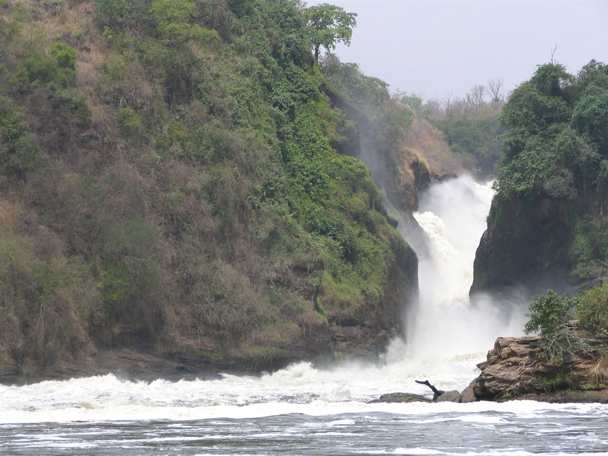
Murchison Falls National Park
Uganda's oldest and largest national park, where the mighty Victoria Nile explodes through a narrow 7-metre gorge and plunges 43 metres into the Devils Cauldron below. Covering 3,893 km² of savanna, woodland and riverine forest, the park shelters over 76 mammal species and 450+ bird species.
A boat cruise to the base of the falls is one of the most dramatic wildlife experiences in Africa — hippos, Nile crocodiles, elephants drinking at the bank, and the rare shoebill stork all within reach.
🦁 Top Activities
- Game drives — lions, elephants, giraffes, leopards, buffalo
- Boat cruise to the base of the falls
- Hike to the top of Murchison Falls
- Nile delta cruise — shoebill stork, papyrus birds
- Sport fishing — Nile perch and tiger fish
- Bird watching — 450+ species
🚗 Travel Info
- Distance: ~305 km from Kampala (4–5 hrs drive)
- Best time: June–Sept & Dec–Feb (dry season)
- Park entry: USD 40 per person per day
- Boat cruise: USD 30 per person
- Closest airstrip: Pakuba or Chobe
- Accommodation: Budget to luxury lodges
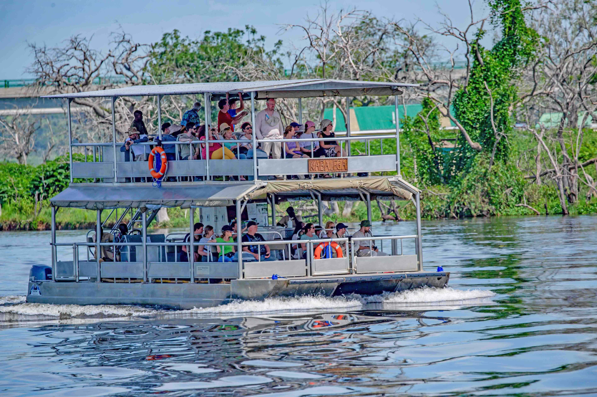
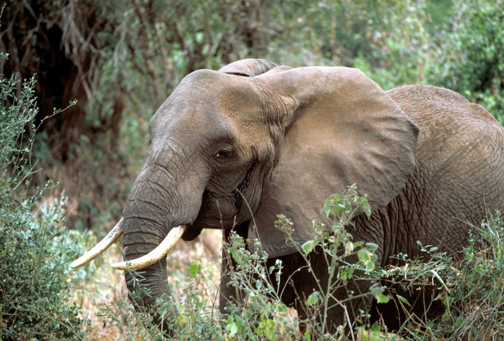
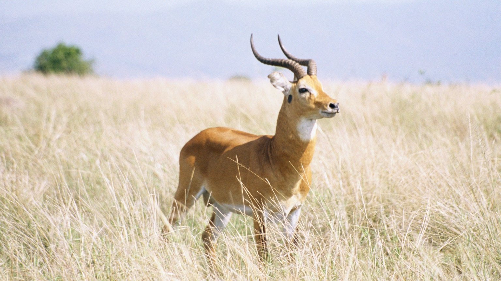
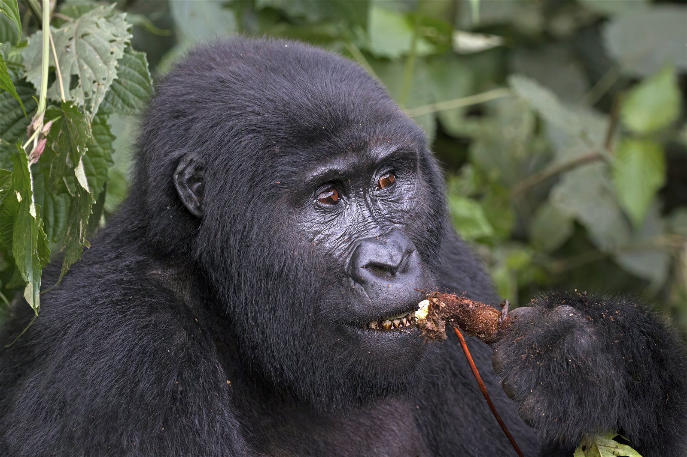
Bwindi Impenetrable National Park
Home to nearly half of the world's remaining mountain gorillas (~459 individuals), this ancient rainforest has existed for over 25,000 years. Bwindi is a UNESCO World Heritage Site, sheltering 120 mammal species, 348 bird species including 23 Albertine Rift endemics, and 220 butterfly species within its misty canopy.
Gorilla trekking here is one of the most profound wildlife encounters on Earth — spending one precious hour face-to-face with a wild gorilla family changes you forever.
🦍 Top Activities
- Gorilla trekking (the park's flagship experience)
- Gorilla habituation — spend 4 hours with a family
- Nature walks on Buhoma, Ruhija, Nkuringo trails
- Bird watching — 23 Albertine Rift endemics
- Batwa pygmy cultural community experience
- Waterfall hikes
🚗 Travel Info
- Distance: ~460 km from Kampala (8–10 hrs)
- Best time: June–Aug & Dec–Feb (drier trails)
- Gorilla permit: USD 800 per person
- Park entry: USD 40 per person per day
- Closest airstrip: Kihihi or Kisoro
- Fitness: Moderate to high required
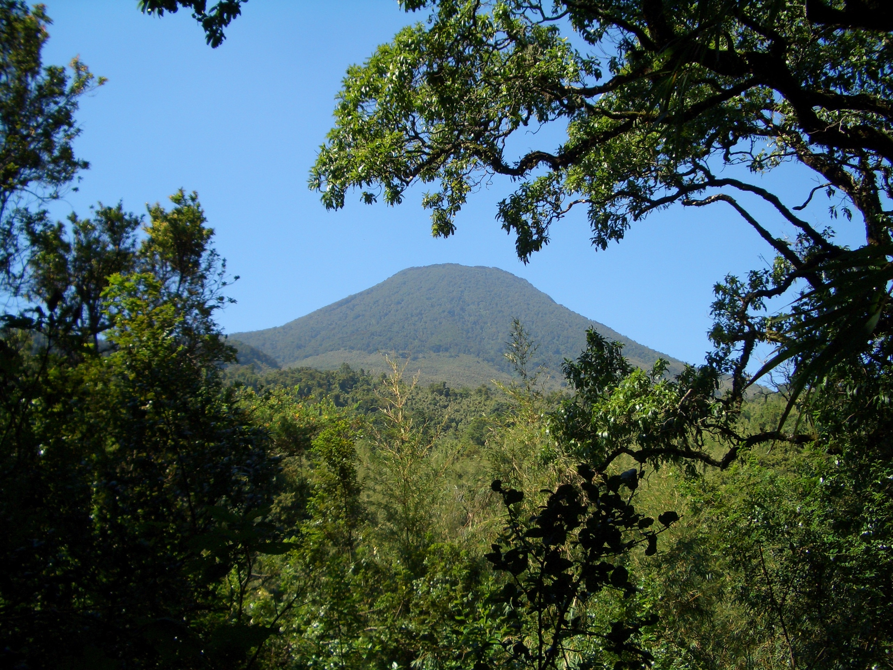
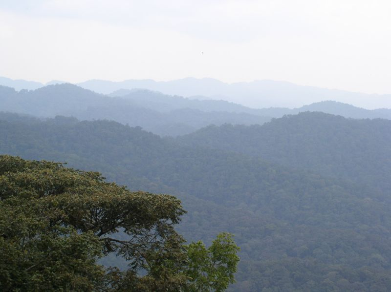
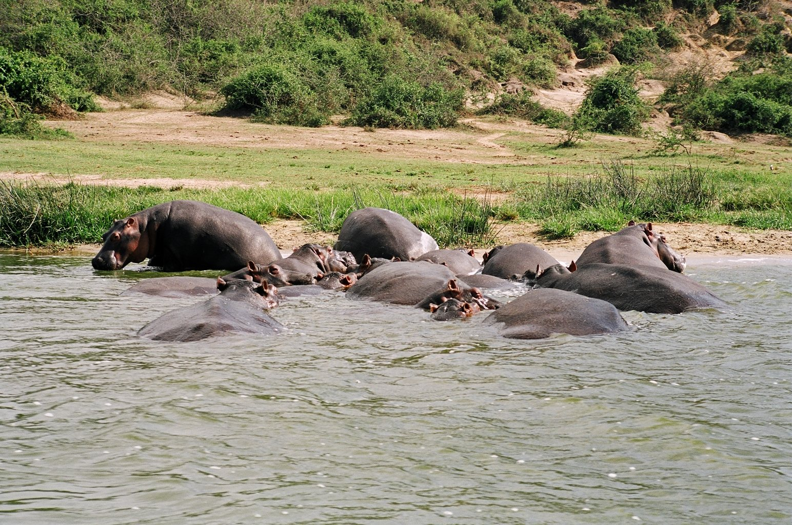
Queen Elizabeth National Park
Uganda's most visited national park spans 1,978 km² of diverse ecosystems — savanna, humid forests, crater lakes, wetlands and two great lakes. Famous for tree-climbing lions in Ishasha, the world's highest concentration of hippos in the Kazinga Channel, and over 600 recorded bird species.
The Kazinga Channel boat cruise is unmissable — you drift past massive pods of hippos, Nile crocodiles sunning on the banks, and hundreds of water birds, all with the Rwenzori Mountains as a backdrop.
🐘 Top Activities
- Game drives — lions, elephants, buffalo, leopards, kob
- Kazinga Channel boat cruise
- Tree-climbing lion tracking in Ishasha sector
- Chimpanzee tracking in Kyambura Gorge
- Crater lake drive — scenic Western Rift Valley
- Bird watching — 600+ recorded species
🚗 Travel Info
- Distance: ~420 km from Kampala (6–7 hrs)
- Best time: Jan–Feb & June–Sept
- Park entry: USD 40 per person per day
- Boat cruise: USD 30 per person
- Chimp tracking: USD 50 per person
- Closest airstrip: Kasese or Mweya
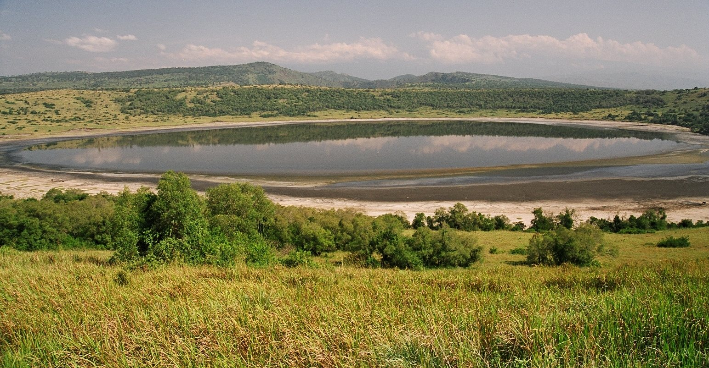
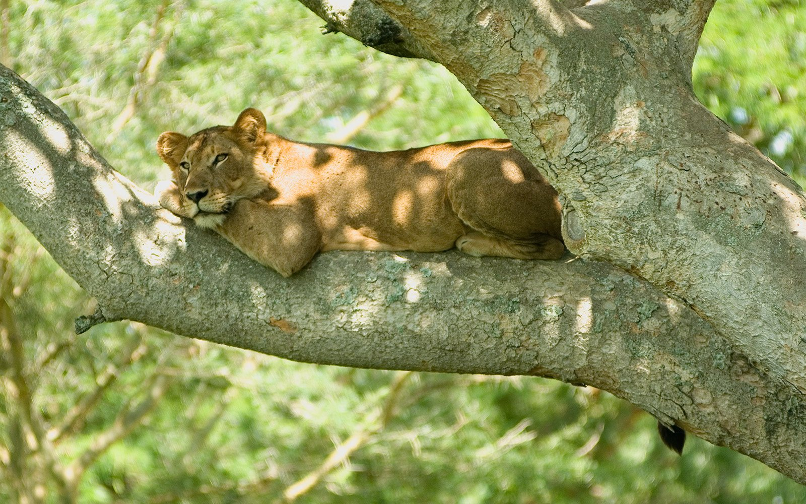
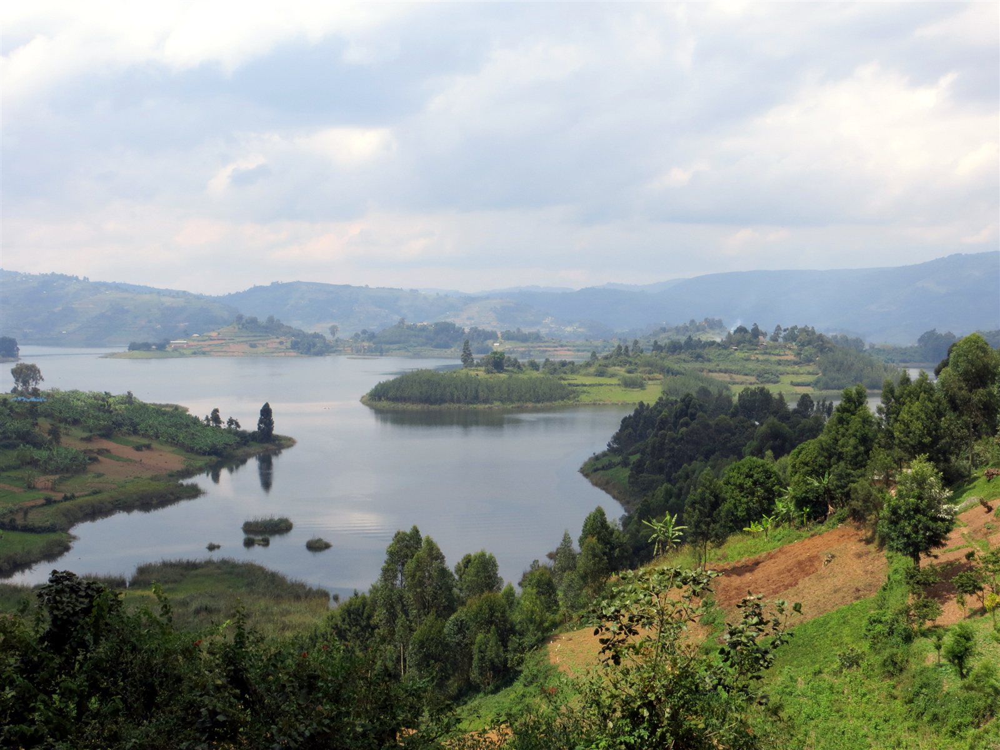
Lake Bunyonyi
Meaning "Place of Many Little Birds," Lake Bunyonyi is one of Africa's most beautiful lakes — serene, terraced green hills dotted with 29 islands, and water so safe you can swim in it (no bilharzia, hippos or crocodiles). At 900 metres depth it is Africa's second deepest lake.
The perfect place to relax and recover after gorilla trekking in nearby Bwindi. Canoe between islands, watch the sunset turn the water gold, and experience the warmth of the local Bakiga community.
🛶 Top Activities
- Canoeing and island hopping across 29 islands
- Swimming — safe, bilharzia-free water
- Sunset boat cruises
- Bird watching — 200+ species
- Hiking through terraced hillsides
- Bakiga cultural community visits
🚗 Travel Info
- Distance: ~430 km from Kampala (7–8 hrs)
- Near Bwindi: 1–2 hrs from trekking trailheads
- Best time: June–Sept & Dec–Feb
- No park entry fee
- Boat rides: USD 10–25 per person
- Accommodation: Eco-lodges, island resorts, camps
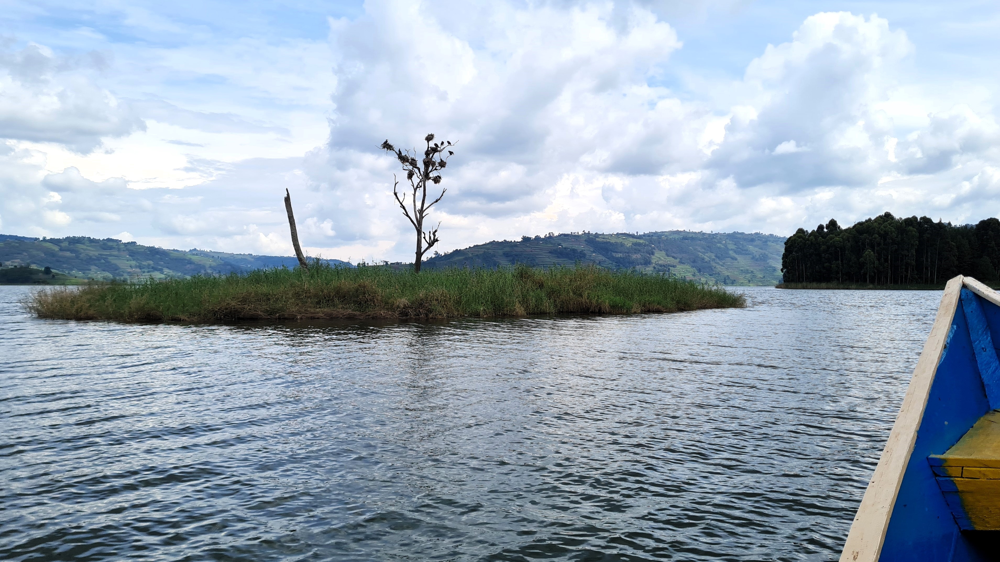
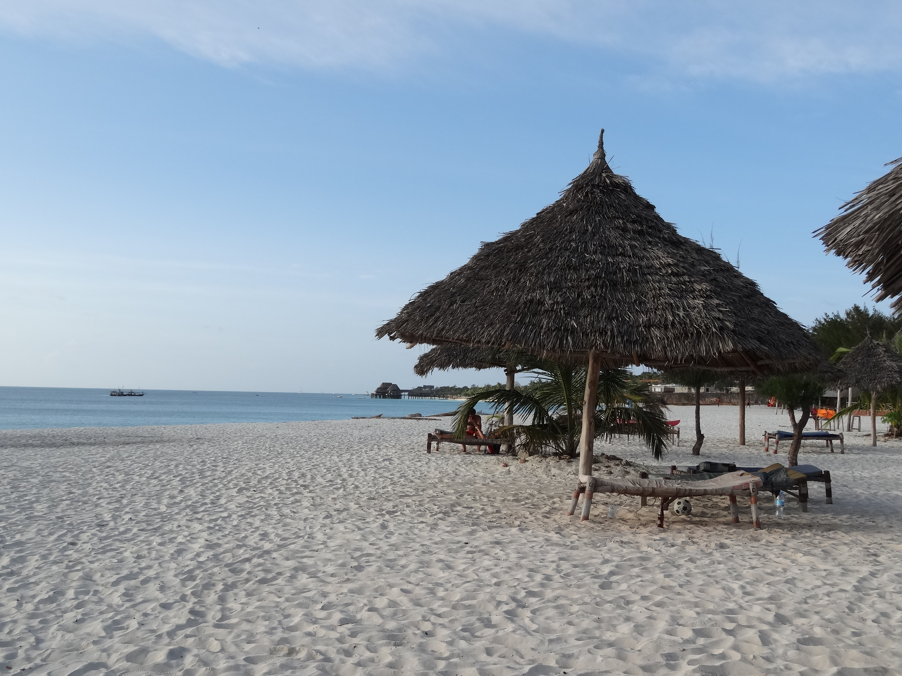
Zanzibar
White-sand beaches, turquoise Indian Ocean waters, Stone Town's ancient Arab architecture, spice farms and spectacular sunsets — Zanzibar is the perfect extension after a Uganda safari. This UNESCO-listed archipelago combines history, culture, cuisine and beach luxury in one destination.
Fly from Entebbe to Zanzibar (via Dar es Salaam) and transition from the thrill of gorilla trekking to the total relaxation of a world-class beach holiday in just a few hours.
🏖️ Top Activities
- Beach relaxation — Nungwi, Kendwa, Pongwe, Matemwe
- Snorkelling & diving at Mnemba Atoll
- Stone Town historic tour — markets, doors, alleys
- Spice farm tour
- Dhow sunset cruise
- Jozani Forest — rare red colobus monkeys
- Prison Island — giant Aldabra tortoises
✈️ Travel Info
- Flights: Entebbe (EBB) → Zanzibar (ZNZ) via Dar es Salaam
- Best time: June–Oct (dry) & Dec–Feb
- Visa: Tanzania e-visa or visa on arrival
- Yellow Fever cert. required from Uganda
- Currency: Tanzanian Shilling / USD accepted
- Accommodation: Budget to 5-star luxury resorts
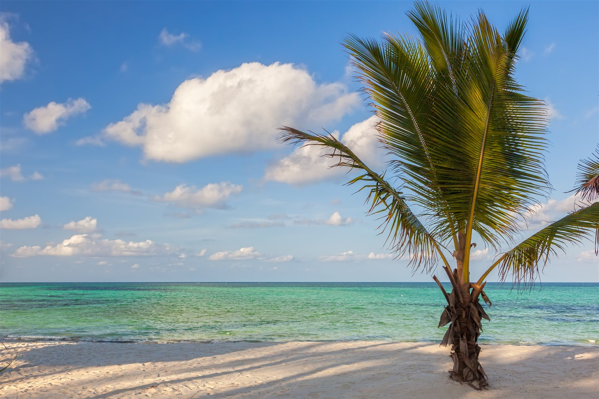
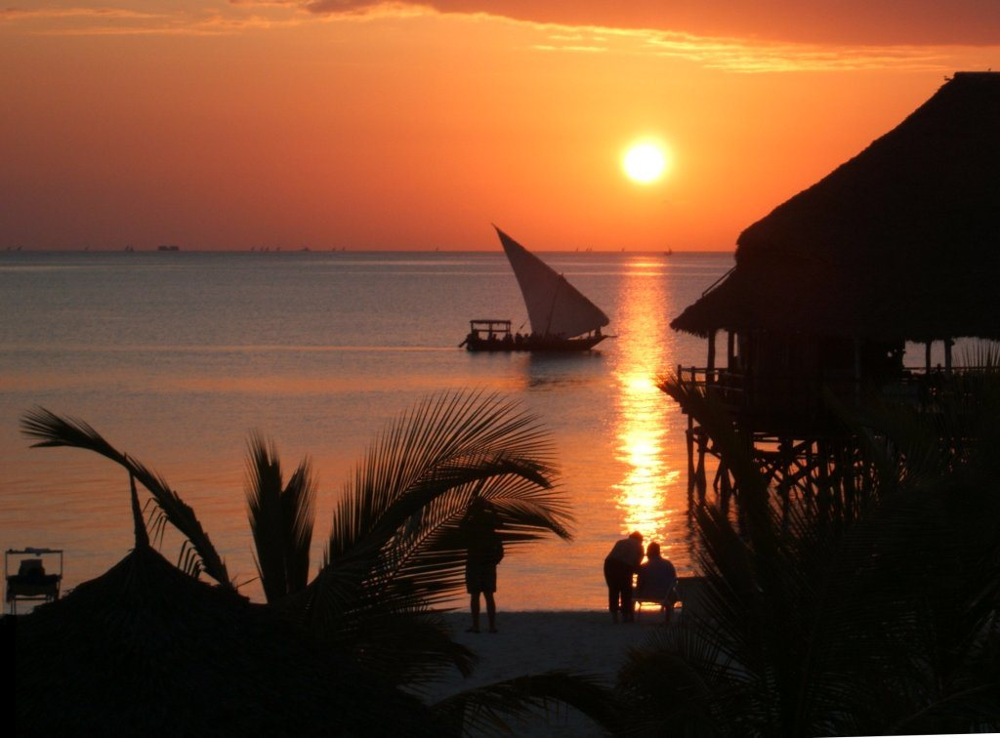
Ready to Plan Your Adventure?
Tell us your dream destination and we'll build the perfect itinerary around you.